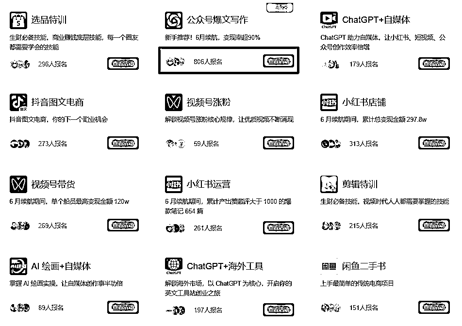

来源：https://z0oj60h34vi.feishu.cn/docx/J77BdyUfVowrfXxHF5Yc932XnNt
大家好，我是叶先生。今年第一年加入生财这个社群。目前从事房地产建筑设计行业，日常工作全依赖电脑，因此对各类电脑效率软件稍有研究，今天分享的内容便是针对AI创作过程中的一些步骤优化，希望对大家有用。
在生财的航海里目前最火的航海线路莫过于公众号爆文了，即便是续航也有八百多人报名可想火爆程度。

在航海手册里主要说明了如何用AI创作爆文。那么这个时候痛点就产生了，因为AI对输入指令有一定格式要求，每次修改内容都需要重新组合指令，复制粘贴的操作流程显得非常机械繁琐。如果你也遇到了这个问题，这篇文章对你应该就有帮助。
首先使用的这个软件其实生财里也有不少圈友介绍过，名字叫Quicker。这个软件有免费版和付费版，对于文中提到的内容，免费版就能实现，大家不需要付费，下载后注册登录即可（登录是为了多电脑可以同步设置，调整指令后，其他电脑会自动同步）。
长话短说，直接进入正题，以下以航海手册提到的情感文举例。
下面使用Quicker软件演示一下普通文章创作的流程与不用Quicker进行创作的区别。
选中内容——》复制内容——》命令组合修改——》选中内容——》复制新的内容——》粘贴到AI对话框
整个过程最少需要六步才能完成。
过程动画演示
选中内容——》使用动作——》粘贴到AI对话框
过程动画演示
可以看到中间的四个步骤全部被动作精简替代，整个创作流程舒服多了。想象一下类似的操作还有，提取情节，拓写段落，段落润色等等，只要学会动作修改，所有命令都能简化，效率自然也就提高了。下面讲解一下怎么修改动作
可以看到用到的命令查看字数，按指令提取文章大纲，按大纲指令生成文章，全程使用手势不需要干预。中间需要做的是针对生成的大纲进行修改，已经生成的文章进一步润色修改。
过程简单，全程下一步，遇到注册就注册，方便各台电脑同步设置（这个软件非常强大，建议电脑作为生产力的圈友都学习一下）。
做完上面的这些操作，这个软件就已经可以成功使用了，先复制文本，然后按住鼠标右键然后滑动就可以调出圆盘，滑动到对应命令位置就可以激活命令。当然这个命令也可以使用快捷键或其他鼠标手势快速呼出，大家自己研究。
最后都修改完记得保存即可。
提供的附件主要分享两个动作
内容包括一些基本指令，如一句话写故事，文章大纲提取，通过大纲进行故事创作，情节提取，拓写润色段落等。通过这几个步骤，对于不会使用AI创作的圈友可以初步掌握创作流程。
流程一：①提取爆文情节——》②一段话写故事——》③局部段落拓写润色
流程二：①提取爆文大纲——》②六要素故事创作——》③局部段落拓写润色
PS:动作里文章复制部分的代码自带格式化功能，大家可以根据需要自行添加要求对文章进行复制。
这个动作可以快速查看当前选择内容字数，方便控制字数。
动作修改的方法以及文中提到的安装包和动作悉数奉上，大家可以根据现成的动作以及自己实际文章创作的赛道，重新修改动作，自定义出自己独一份的快捷指令。
针对没跑通的圈友，尤其看到群里其他圈友在晒成绩可能会比较焦虑。我 个人的建议是不要思想内耗，下场干是最重要的第一步，第二步坚持日更，有了这两步才能有下一步的优化进步。
希望文章对大家有用，这里祝大家条条10w+爆文，一个月就发家致富！